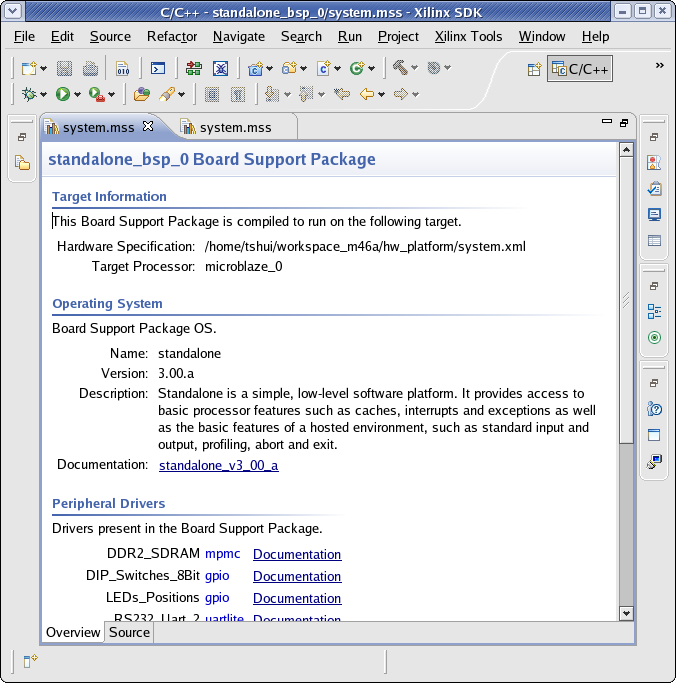
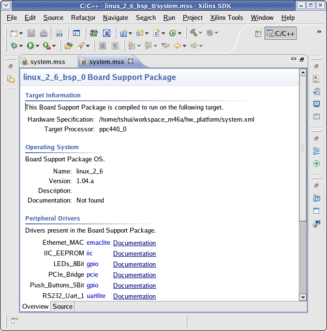

- The Target Information section contains the hardware platform specification file name and target processor.
- The Operating System section describes the BSP and includes a link to documentation.
- The Peripherals Drivers section lists the drivers present in the BSP and includes a links to driver documentation.


Board support packages (SDK)
Board support packages (external tools)

Creating a board support package (external tools)
Configuring a board support package (SDK)
Building a board support package for SDK
Configuring a board support package (external tools)

Board Support Package (SDK) Settings dialog box
Copyright © 1995-2011 Xilinx, Inc. All rights reserved.